Національна програма першості торгових марок «Знак Довіри»
єдина українська нагорода у сфері бізнесу, яка дозволяє перетворити думку споживача у маркетинговий актив.
- 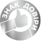
- 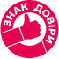
- 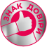
- 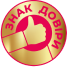

- 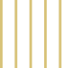
- 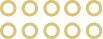
Відзнака “Знак Довіри” – це:
- результат, заснований на маркетинговому дослідженні споживчих уподобань
- статус, що справляє враження у тендерах та потенційних партнерствах
- нагорода, яка добре запам’ятовується споживачем
- конкурентна перевага, яку неможливо скопіювати
- меседж для цифрових комунікацій, що працює на всі 100% ефективно
- інформаційний привід, що посилює HR-бренд
Національна програма першості “Знак Довіри” створена для розвитку вашого бізнесу та стимулювання продажів! Ми вміємо перетворювати довіру у факти, що стимулюють продажі, та розвиваємо історії успіху українського бізнесу, що варті особливої уваги споживачів.
Як взяти участь та потрапити у програму першості?
- Заповніть заявку на сайті чи надішліть запит у соцмережах/ по телефону
- Опишіть портрет цільової аудиторії
- Отримайте підтвердження участі
- Перемагайте та насолоджуйтесь результатом
- Робіть ривок у напрямку масштабування та розвитку бізнесу!
«Знак Довіри» Q&A
-
64%
споживачів вважають, що найвагоміша умова покупки – це довіра.
Розвивайте потенціал продажів, інвестуючи у видимість довіри. -
75%
надають перевагу бізнесам, яким довіряють, а не тим, що пропонують найкращу ціну.
Стимулюйте та пришвидшуйте продажі преміальних продуктів, не втрачаючи у прибутках. -
78%
споживачів поширюють з більшою імовірністю інформацію про нові продукти та послуги бізнесів, яким довіряють, і захищають їх від критики під час криз у комунікаціях.
Посилюйте комунікації у цифровий канал, оперуючи доведеним фактом довіри.
- Чому «Знак Довіри» це – престижно?
- Як «Знак Довіри» посилює репутацію та може допомогти у час репутаційних криз?
- Як «Знак Довіри» впливає на продажі та лояльність покупця\клієнта?
- Що входить у вартість участі?
Нагорода
Національна програма першості «Знак Довіри» – це потужний меседж та візуальний знак, що легко інтегруються у вашу стратегію комунікації зі споживачем і посилюють її. Зокрема, «Знак Довіри» ви можете:
- розмістити на сайті
- використати на кавері у соціальній мережі Facebook
- використати у дизайнах дописів/stories продуктів та послуг у Instagram
- використати у медійних матеріалах та PR
- розміщувати на упаковці чи етикетці продукту
- скористатись фактом перемоги як інфоприводом та реалізувати інформаційну кампанію
- використати у відеороликах та відеооглядах
- використати у рекламних кампаніях в соціальних мережах та пошуковиках
* Організаційний комітет нагороди завжди допоможе вам з реалізацією будь-яких ідей Замовити PR пакет або отримати консультацію щодо реклами 097-616-51-44
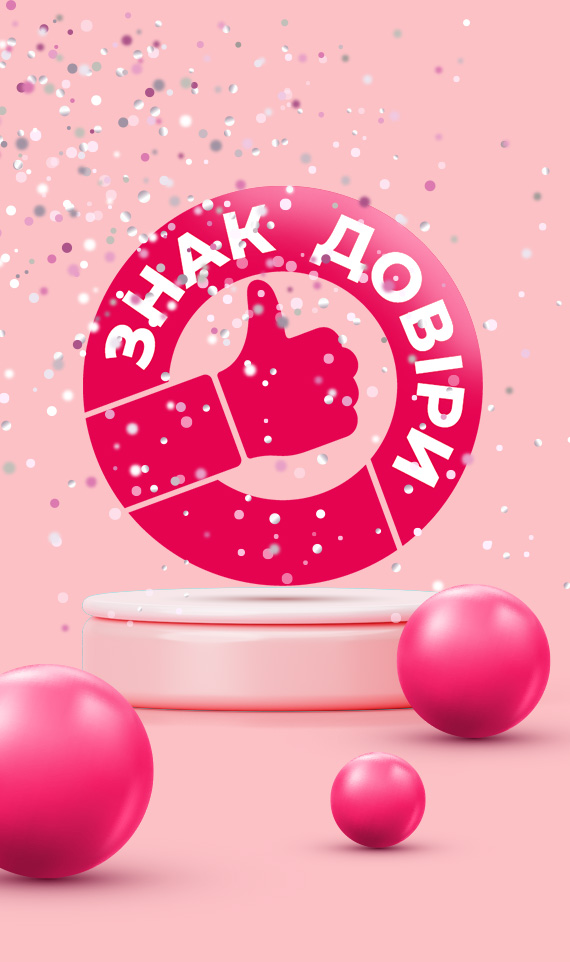Методологія визначення лідерів довіри
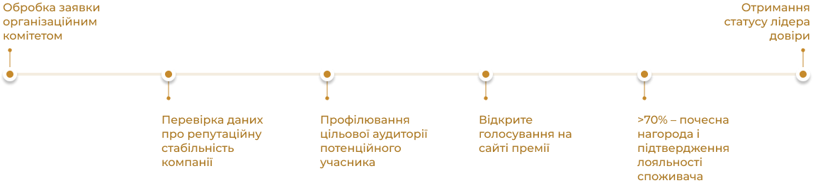- компанії з російським капіталом
- підсанкційні компанії і торгові марки
- інші репутаційні ризик-фактори
Приклади використання знаку
- 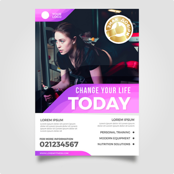
- 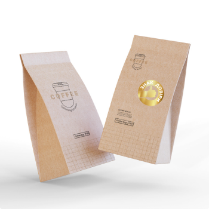
- 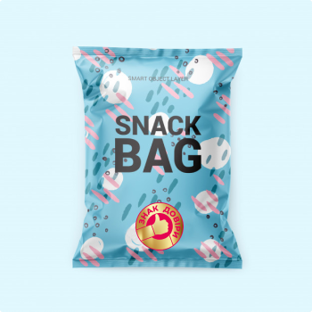
- 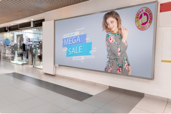
- 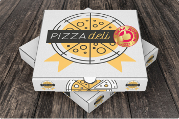
- 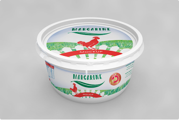
- 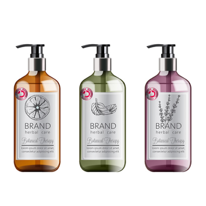
- 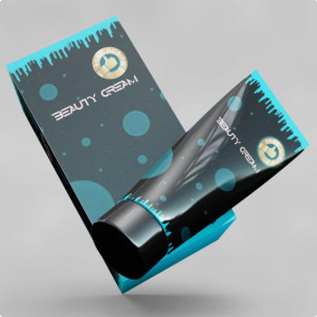
- 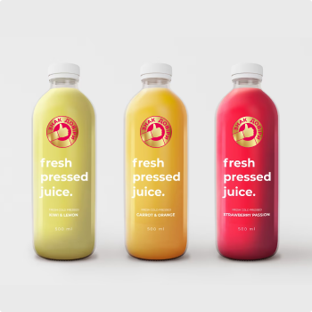
Лідери довіри
-
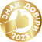
Romantik Spa Hotel 4-зірковий готель з системою All inclusive (м. Яремче, Івано-Франківська область)
-
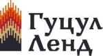
Етнопарк “Гуцул Ленд” (Буковель, Івано-Франківська область)
-
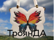
Ексклюзивні дизайнерські сумки ручної роботи ТроянДА
-
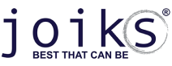
Верхній мембранний одяг для дітей
-
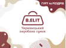
Виробник жіночих сумок ТМ “B.ELIT”
-
Всі комунальні платежі Вінниці в одному місці. Зручно! Користуєтесь?
-
ТМ SOLMAR базовий жіночий одяг (Україна)
-
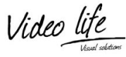
Video Life. Оренда та продаж світлодіодних екранів (м. Київ, послуги по усій Україні)
-
ТМ «Власна Думка». Онлайн дослідження (Україна)
-
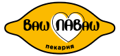
Мережа родинних пекарень «Ваш Лаваш»